2025-2026学年七年级数学上学期期末模拟卷
强化卷·全解全析
（考试时间：120分钟 试卷满分：120分）
注意事项：
1．答卷前，考生务必将自己的姓名、准考证号填写在答题卡上。
2．回答选择题时，选出每小题答案后，用铅笔把答题卡上对应题目的答案标号涂黑。如需改动，用橡皮擦干净后，再选涂其他答案标号。回答非选择题时，将答案写在答题卡上。写在本试卷上无效。
3．考试结束后，将本试卷和答题卡一并交回。
4．测试范围：北师大版2024七年级上册第一章~第六章。
一、选择题（本题共10小题，每小题3分，共30分。在每小题给出的四个选项中，只有一项是符合题目要求的。）
1．如图所示的几何体是由几个相同的小立方块搭成的几何体，那么从上面看这个几何体得到的平面图形是（ ）

A．
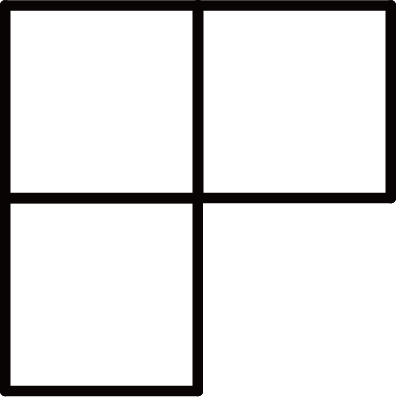
B． C．
C． D．
D．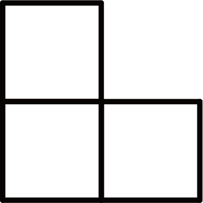
2．下列各组数中，相等的是 （ ）
A． 与
与
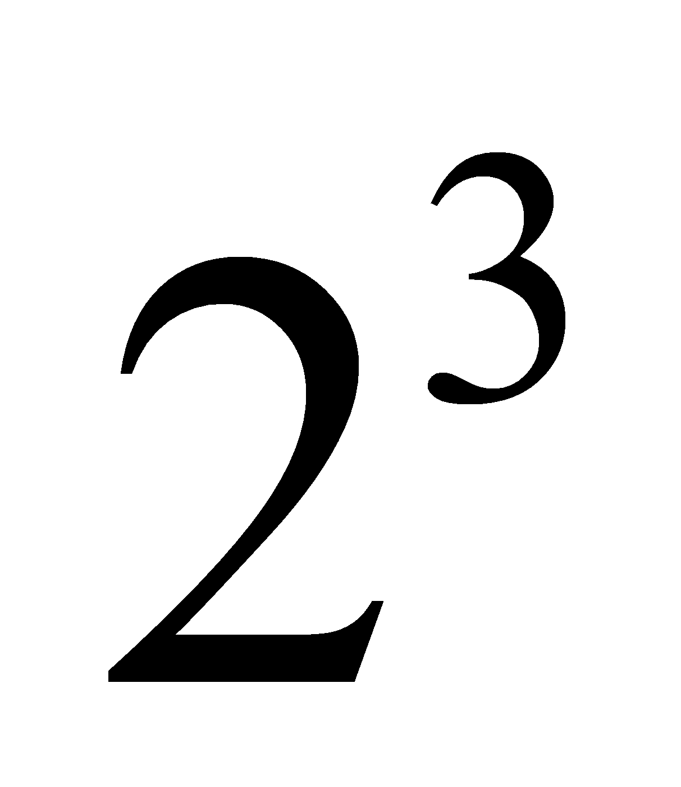
B．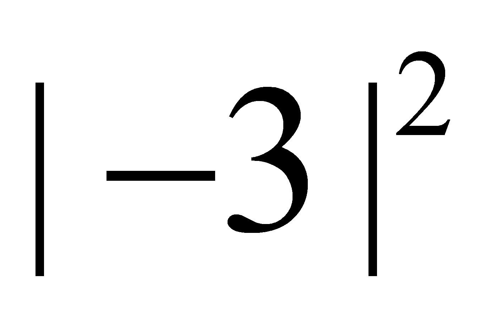
与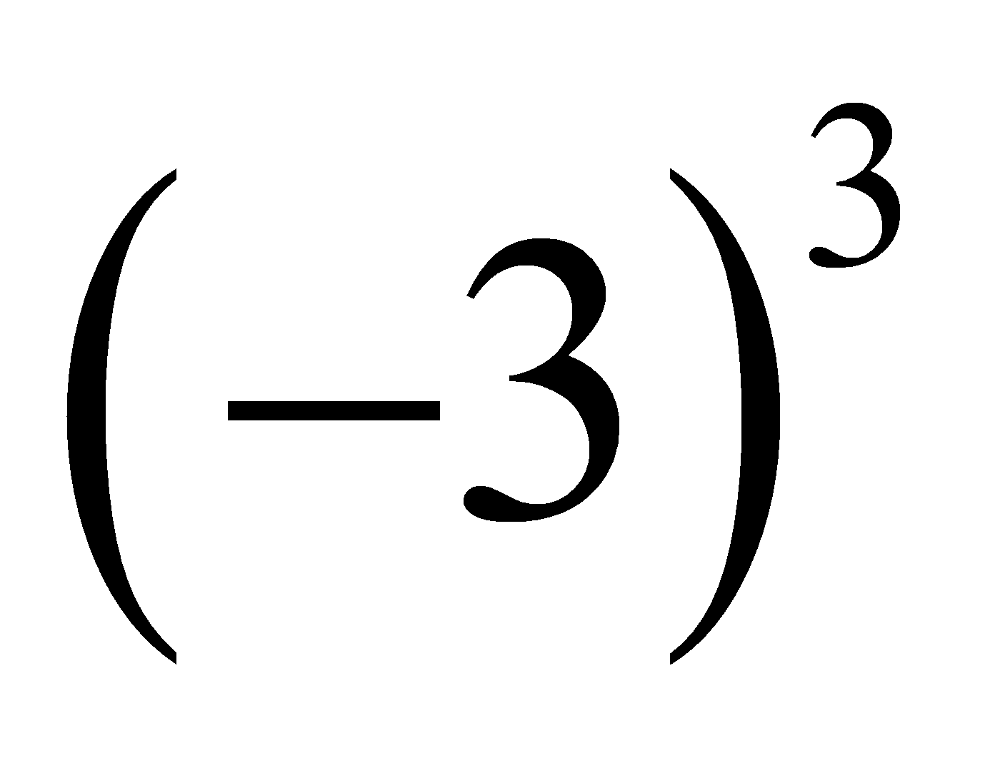
C．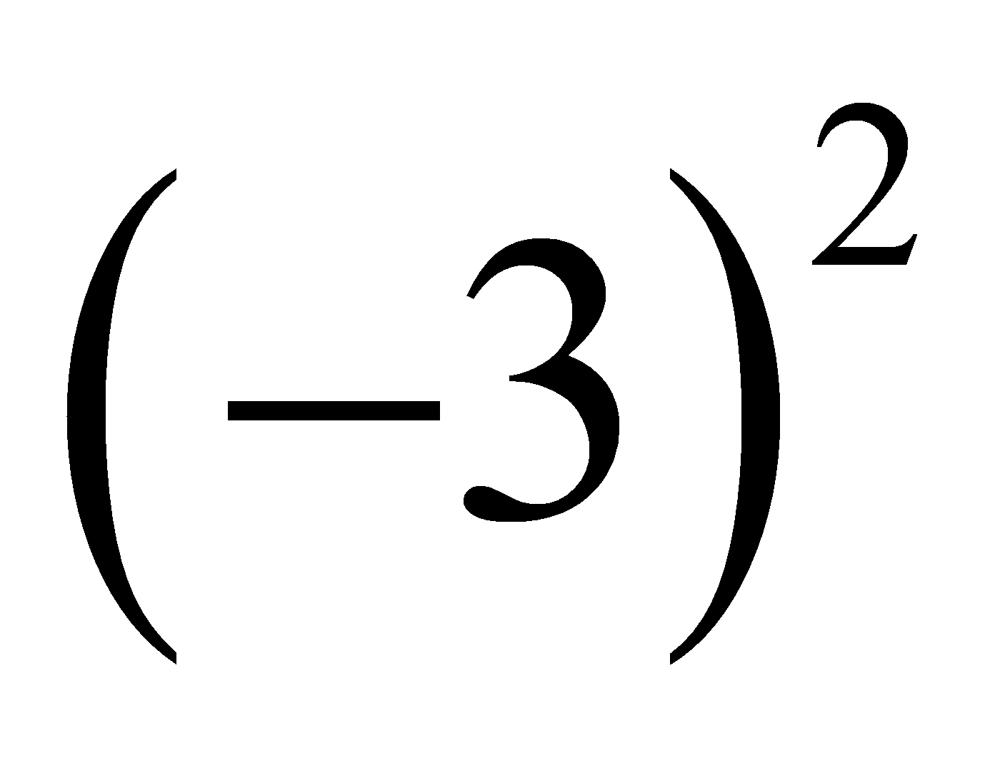
与 D．
D． 与
与 
3．下列说法错误的是（ ）
A．若 ，则
，则 B．若
B．若 ，则
，则
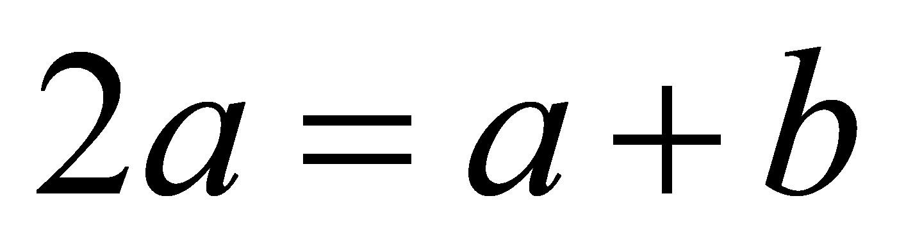
C．若
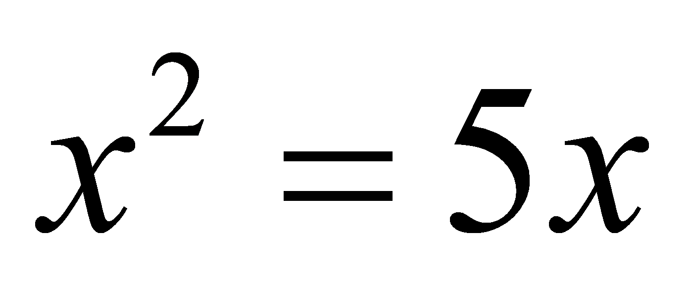
，则 D．若
D．若 ，则
，则4．已知实数a，b，c满足 ，则当
，则当 时，代数式
时，代数式
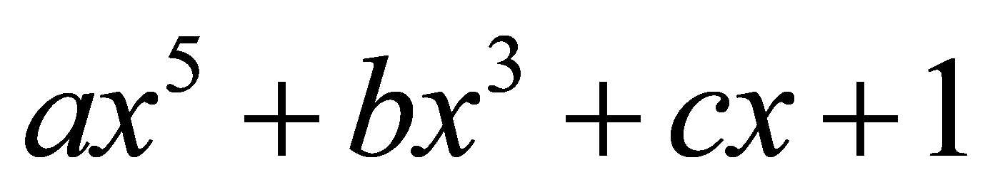
的值是（ ）A．7 B． C．
C． D．5
D．5
5．竹竿作为一种常见的天然植物材料，具有多种作用和功效，如图，将一根竹竿 从
从 处分成两部分，截断后的各段竹竿中有一段长为
处分成两部分，截断后的各段竹竿中有一段长为 ，若
，若
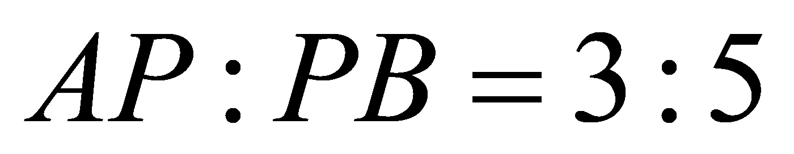
，则这根竹竿的原长为（ ）
A．
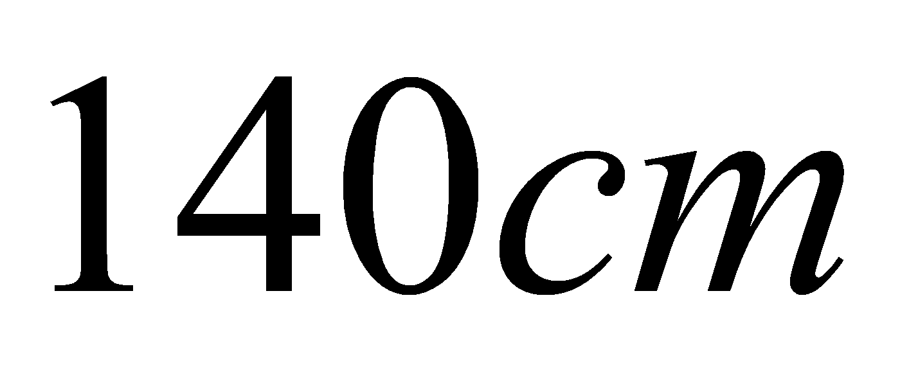
或 B．
B． 或
或C．或 D．或
D．或
6．下列调查中，适合采用全面调查（普查）方式的是（ ）
A．对我市中学生观看电影《南京照相馆》情况的调查
B．调查琼江河的水质情况
C．调查某班学生视力情况
D．调查全国初一中学生的平均身高
7．如图，点A、O、B在同一直线上， 平分
平分 ，
， ，则
，则 的度数是（ ）
的度数是（ ）
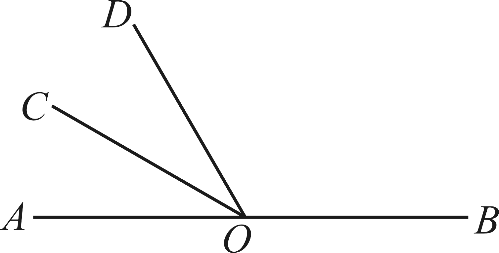
A． B．
B． C．
C． D．
D．
8．王老师将正确的演算过程书写在黑板上，随后用手掌捂住了如图所示的一个二次三项式，则所捂的多项式为（ ）

A． B．
B．
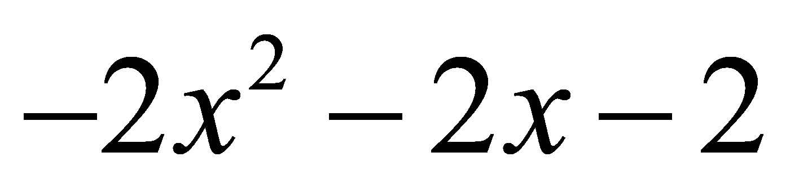
C．
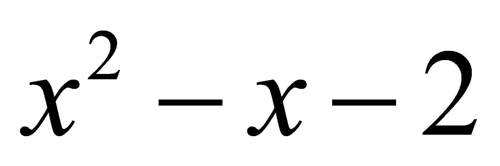
D．
9．古书上有这样一个问题：“今有人买鸡，人出六，盈五；人出五，不足二．问人数、物价各几何．”意思是有若干人一起买鸡，如果每人出6文钱，就多出5文钱；如果每人出5文钱，就差2文钱．买鸡的人数、买鸡的费用分别是多少？若设买鸡的人数是x人，根据题意列一元一次方程正确的是（ ）
A． B．
B．
C． D．
D．
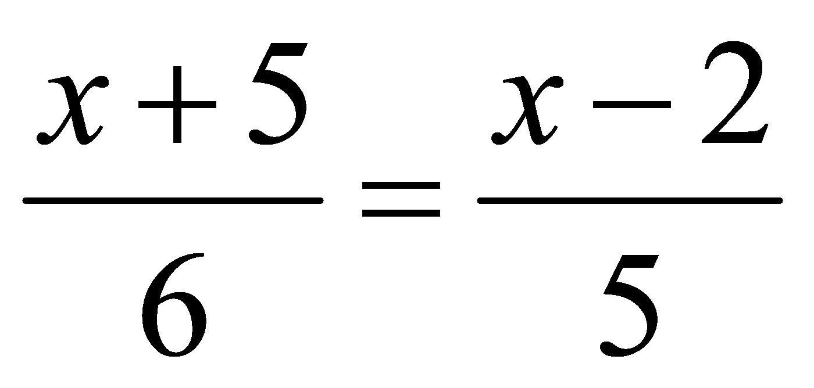
10．下列说法中，错误的个数是（ ）
①若 ，则
，则 ；
；
②若 ，则有
，则有 是负数：
是负数：
③A、B、C三点在数轴上对应的数分别是 、6、x，若相邻两点的距离相等，则
、6、x，若相邻两点的距离相等，则 ；
；
④若代数式
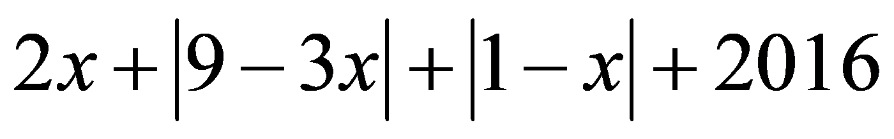
的值与 无关，则该代数式值为2024；
无关，则该代数式值为2024；⑤若 ，
， ，则
，则 的值为
的值为 ．
．
A．1个 B．2个 C．3个 D．4个
填空题（本题共6小题，每小题3分，共18分．）
11．计算： ．
．
12．某高铁站出站后有出租车、地铁、汽车、公交等出行方式，高铁站为调查各个出行方式的人流，先对1000人展开调查，结果如图所示，那么某日高铁站出站客流约为24000人，其中有约 人选择出租车．
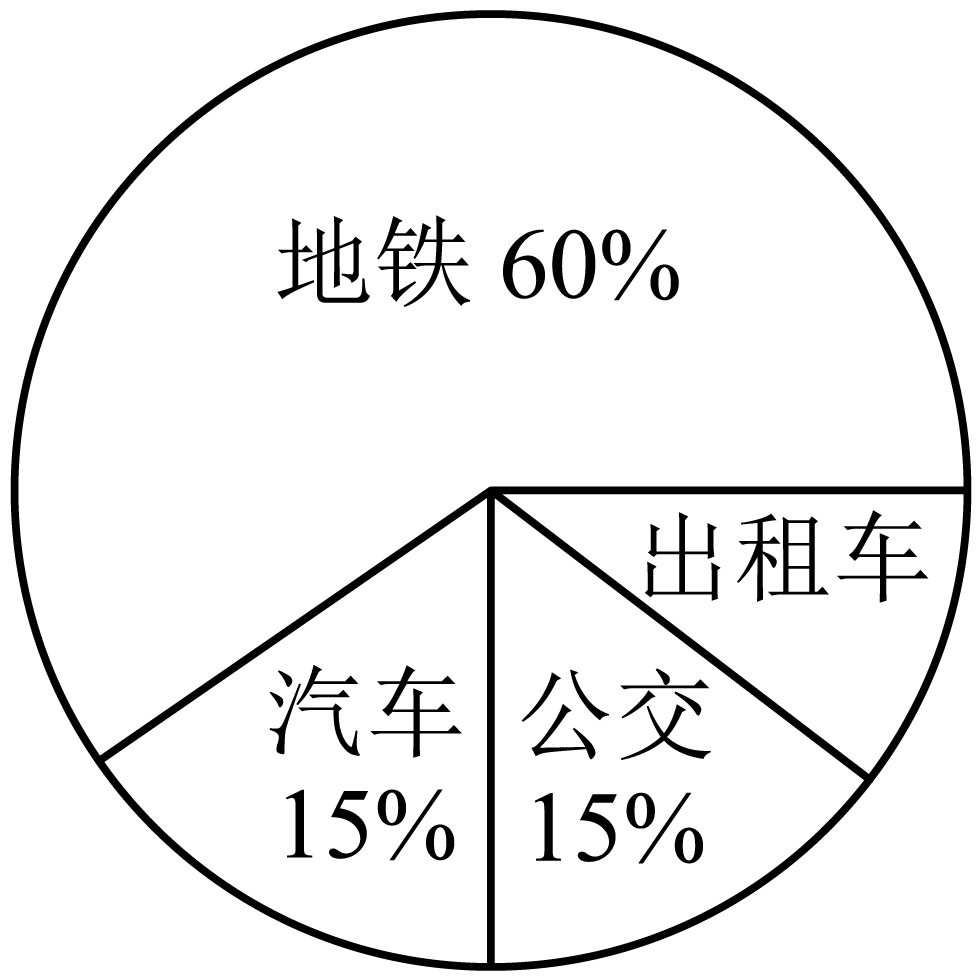
13．多项式：
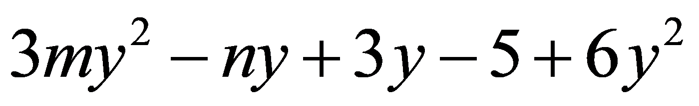
的值与x，y的取值无关， 则 的值为
的值为 14．按图所示的程序计算，如果输入的数是 ，那么输出的结果是 ．
，那么输出的结果是 ．

15．幻方是古老的数学问题，我国古代的《洛书》中记载了最早的幻方．将9个数填在 的方格中，如果满足每行、每列、每条对角线上的三个数字之和都相等，就得到一个广义的三阶幻方．如图是一个未完成的广义三阶幻方，根据已知的3个数，可得
的方格中，如果满足每行、每列、每条对角线上的三个数字之和都相等，就得到一个广义的三阶幻方．如图是一个未完成的广义三阶幻方，根据已知的3个数，可得 ．
．

16．将（1）和（2）两张正方形纸片按图示两种方式放置在同一个长方形中．图（1）中阴影部分的周长和为 ，图（2）中阴影部分的周长和为
，图（2）中阴影部分的周长和为 ，且
，且
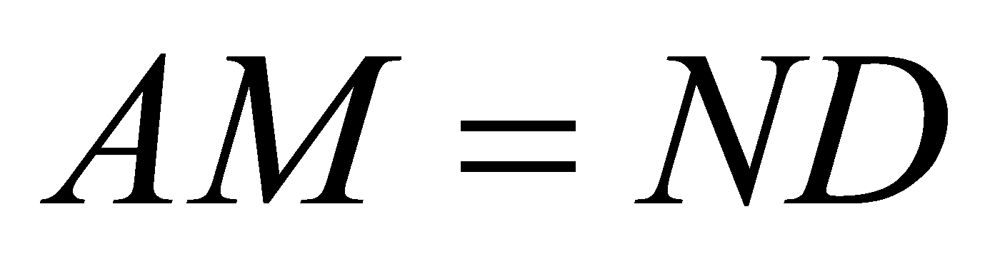
．若 ，
，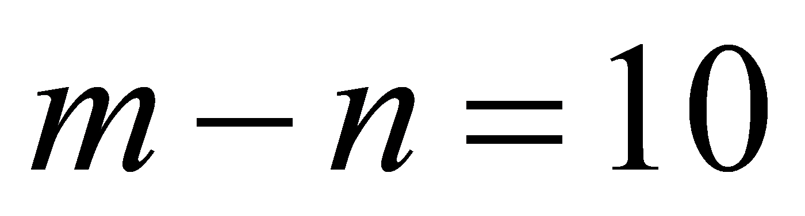
，则正方形①的边长为 ．
解答题（本题共8小题，第17-21题每题8分，第22-23题每题10分，第24题12分，共72分．解答应写出文字说明、证明过程或演算步骤．）
17．计算∶
(1)
(2)
18．解方程
(1) ；
；
(2) ．
．
19．先化简，再求值：
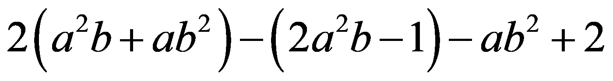
．其中 ，
， ．
．20．为了实现教育部部长怀进鹏提出的在大课间 分钟内让学生心里有阳光，身体能出汗，在身心健康中，为我们的学生、为我们的未来奠定好的基础，实验中学校团支部随机抽取了若干位学生进行问卷调查（要求每位学生只能填写一种自己喜欢的活动），并将调查的结果绘制成如下的两幅不完整的统计图，请根据图中信息，解答下列问题：
分钟内让学生心里有阳光，身体能出汗，在身心健康中，为我们的学生、为我们的未来奠定好的基础，实验中学校团支部随机抽取了若干位学生进行问卷调查（要求每位学生只能填写一种自己喜欢的活动），并将调查的结果绘制成如下的两幅不完整的统计图，请根据图中信息，解答下列问题：
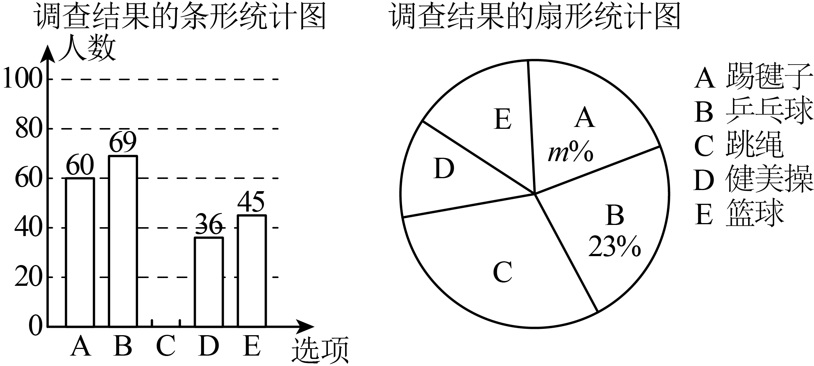
(1)参加调查的人数共有 人，在扇形图中，表示“C”的扇形圆心角的度数为 度；
(2)补全条形统计图，并计算扇形统计图中的m；
(3)估计全校 人中喜欢球类运动的有多少人．
人中喜欢球类运动的有多少人．
21．如图是一个几何体的侧面展开图．
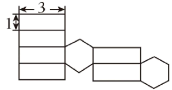
(1)请写出这个几何体的名称；
(2)请根据图中所标的尺寸，计算这个几何体的侧面积．
22．如图，已知线段 ，点M是的中点，点C在线段
，点M是的中点，点C在线段 上，且
上，且 ．
．
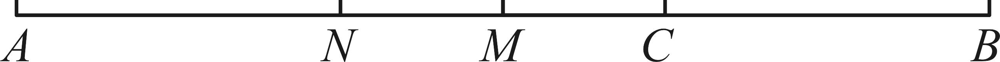
(1)求线段 的长；
的长；
(2)若点N是的中点，求线段 的长．
的长．
23．列方程解应用题
某商场经销甲、乙两种畅销产品，甲种产品每件进价50元，乙种产品每件进价80元．为了迎接“双十一购物节”活动，该商场花费12400元提前购进甲、乙两种商品共200件．
(1)该商场分别购进甲、乙两种产品多少件．
(2)若甲种产品的标价是进价的3倍，每件乙种产品按标价出售可获得利润120元．“双十一购物节”期间，商场对这两种产品进行优惠促销活动：甲种产品每件降价
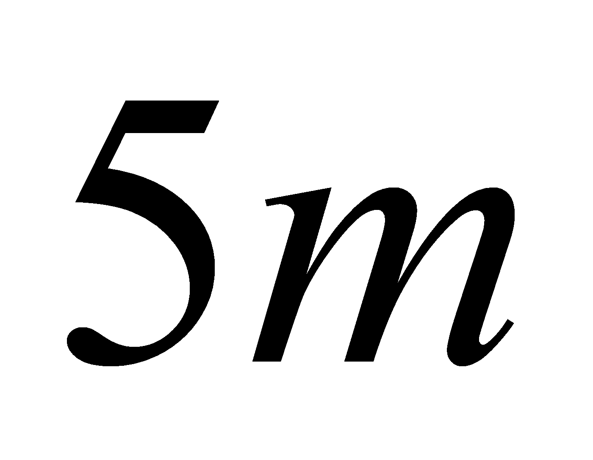
元，乙种产品打m折出售．将这200件产品卖完后，商场最终获利13600元，求m的值．24．已知：如图1， 分别为锐角内部的两条动射线，当运动到如图的位置时，
分别为锐角内部的两条动射线，当运动到如图的位置时，

(1)求 的度数；
的度数；
(2)如图2，射线 分别为
分别为
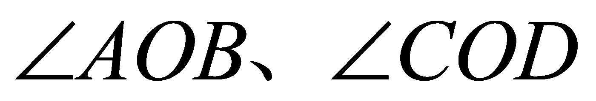
的平分线，求 的度数．
的度数．(3)如图3，若 是外部的两条射线，且
是外部的两条射线，且
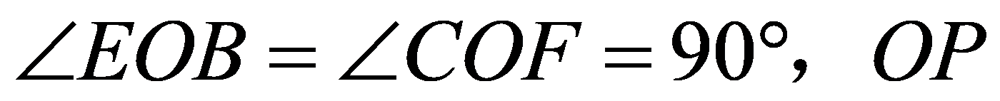
平分 ，
， 平分
平分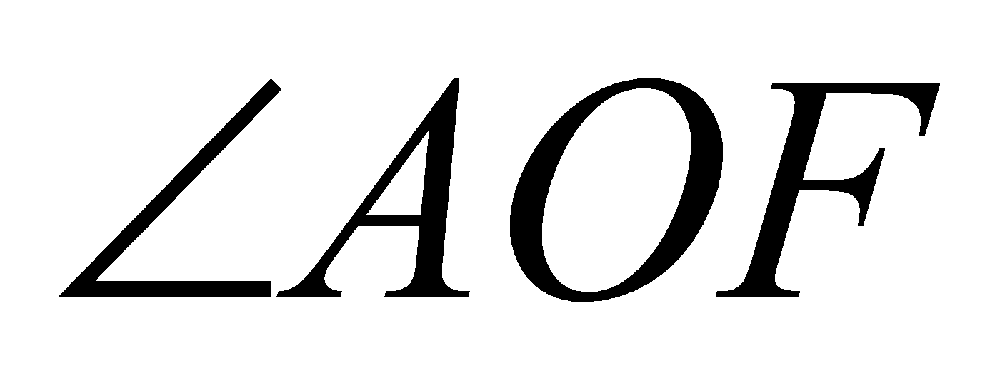
，当绕着点O旋转时，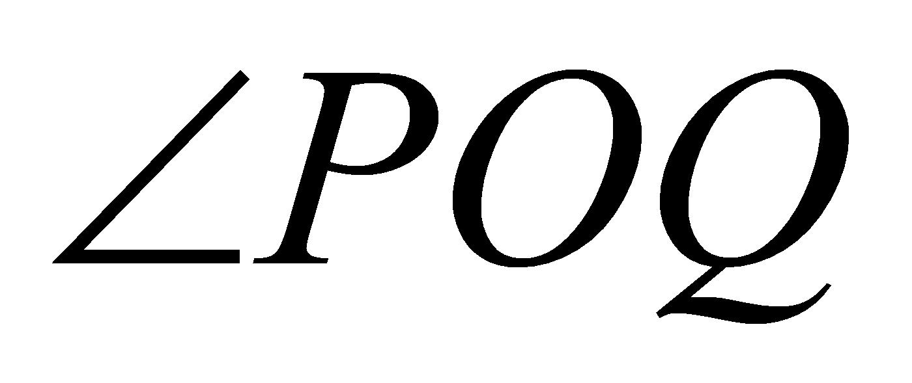
的大小是否会发生变化，若不变，求出其度数，若变化，说明理由．